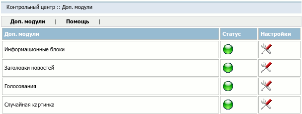
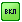
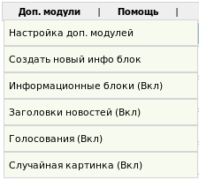

Название
Доп. модули — Управление плагинами.
О модуле
| Тип | Административный |
| Можно создать копий | Только одну |
| Присутствует по умолчанию | Да |
| Можно удалять | Да |

На странице сгенерированной данным модулем можно управлять плагинами, установленными в системе. Полный список доступных плагинов а также их настроек приводится в справочнике по плагинам.
Действия над плагином
- / Статус
Включить/выключить данный плагин.
 Настройки
НастройкиРедактирование настроек плагина.
Меню Доп. модули

Пункт меню "Доп. модули" присутствует в верхнем административном меню на страницах всех модулей. С помощью него можно совершить следующие действия:
- Настройка доп. модулей
Переход на страницу модуля. По умолчанию - → .
- Создать новый инфо-блок
___Создать новый инфо-блок___
- Название плагина (статус)
Переход на страницу настроек соответствующего плагина.